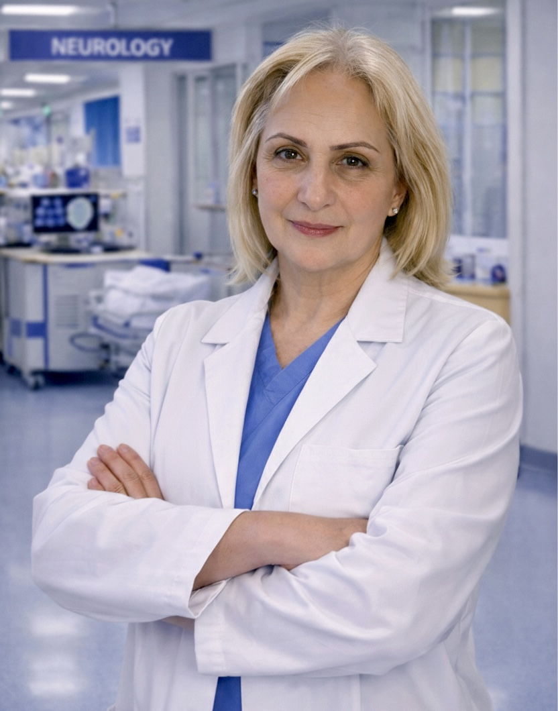

Instructor of Neurology & Medical-Surgical Nursing

Narine Abrahamyan, M.D., is a dedicated physician, neurologist, and educator whose professional life reflects long-standing service to medicine, healthcare education, and patient care. With a clinical background rooted in neurology and diagnostic medical practice, she brings valuable professional knowledge, discipline, and practical insight to the academic environment.
Her professional academic foundation includes graduation in 1989 from the National Institute of Health named after Academician S. Avdalbekyan in Yerevan. This educational foundation helped shape her clinical understanding and supported her development as a medical professional dedicated to careful assessment, diagnostic reasoning, and patient-centered care.
Throughout her career, Ms. Abrahamyan has gained meaningful experience in healthcare settings where accuracy, responsibility, clinical judgment, and compassion are essential. As a neurologist, she possesses specialized knowledge of the nervous system, including brain, spinal cord, nerve, and neuromuscular conditions. Her clinical background allows her to teach complex neurological concepts with clarity, structure, and practical relevance.
Ms. Abrahamyan has made a valuable contribution to healthcare education through her teaching of Neurology. Through her instruction, she helps students understand neurological disorders, patient assessment, clinical manifestations, neurological examination principles, and the importance of early recognition of changes in neurological status. Her teaching reflects professionalism, experience, and a sincere commitment to student development.
Through her work as an educator, she has helped students build the knowledge and confidence necessary to understand complex neurological conditions and apply that understanding in healthcare practice. Her influence extends beyond the classroom, strengthening students' appreciation for clinical reasoning, patient safety, and compassionate care.
Narine Abrahamyan represents the noble values of healthcare education: knowledge, discipline, integrity, service, and dedication to others. Her work continues to contribute to the preparation of future healthcare professionals and to the strengthening of medical and nursing education.
Her specialized clinical background in neurology directly enriches her role as an educator — enabling her to teach with the depth and precision that complex neurological subjects demand. Students benefit not only from her medical knowledge but from her ability to connect clinical realities to the principles of nursing practice and patient-centered care.
Through her years of service in medicine and healthcare education, Ms. Abrahamyan exemplifies the commitment to healing, teaching, and professional integrity that defines the faculty of the Armenian College of Nursing & Health Sciences.